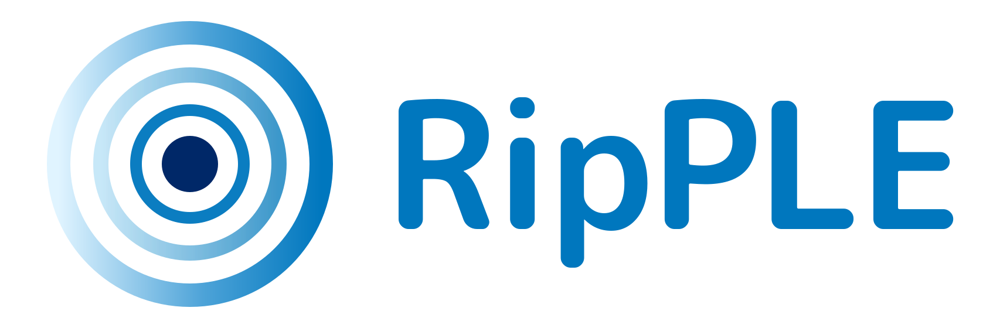
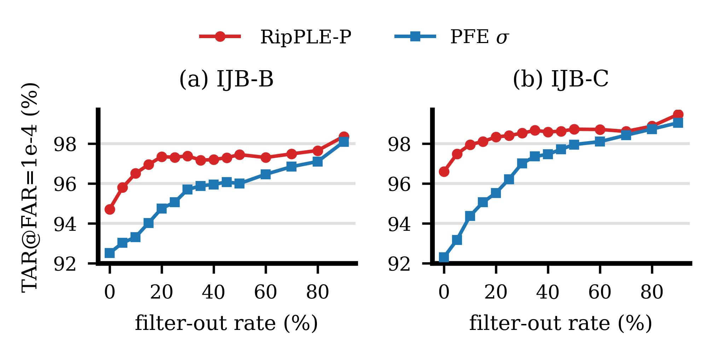
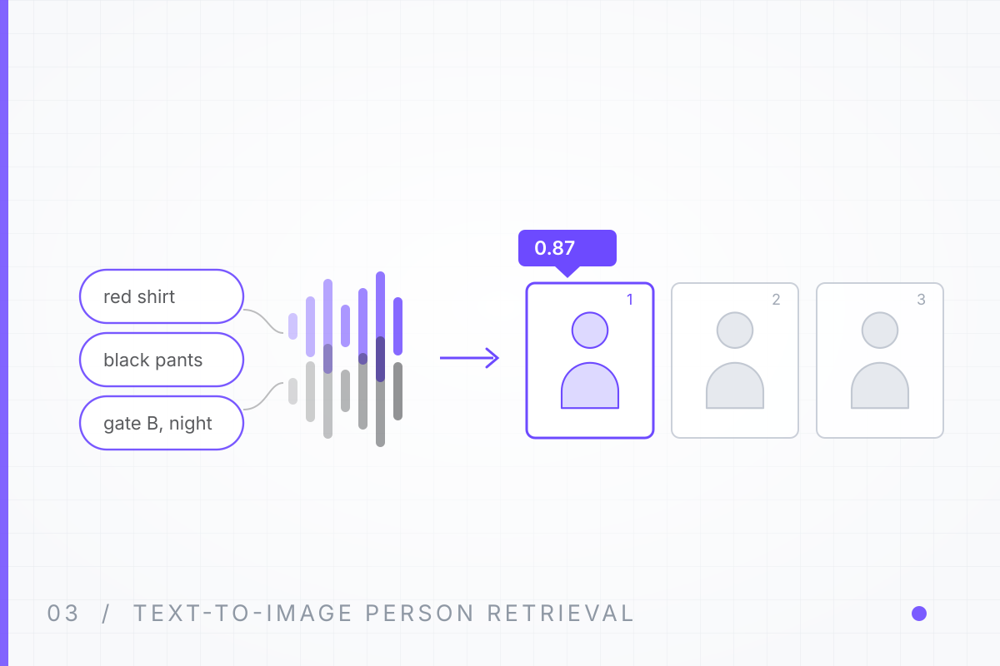

FIRST-AUTHOR PAPER · UNDER REVIEW
RipPLE: Concentric Hypersphere Embedding
Concentric Hypersphere Embedding for Pairwise Similarity Learning
Face embeddings are usually L2-normalised, which throws away how reliable each image is. RipPLE keeps the norm and lets it carry exactly that: direction encodes identity, norm encodes evidence, learned end-to-end by the pairwise loss and used at scoring time.
96.82
IJB-C TAR@FAR=1e-4
95.50
IJB-B TAR@FAR=1e-4
98.37
IJB-B TAR after norm-based frame filtering
IResNet-100, trained on MS1MV2 for 240k steps.

The Problem
Normalising every embedding onto the unit hypersphere makes scoring purely angular. The angular score answers how similar two faces look, but not how much evidence supports that similarity.
Low-quality inputs therefore collapse into the same region as clean impostors, which directly lowers the true acceptance rate at the low false-accept rates that security applications demand.
The Idea
Keep the norm, and learn it. The radial coordinate becomes a confidence signal that grows for clear faces and shrinks for degraded ones, while the angular coordinate stays responsible for identity.
Because the norm also scales every logit, it acts as the temperature of the loss: left free it hampers convergence, fixed per sample it removes the evidence.
Three Anchoring Forms
RipPLE
main formArithmetic mean of the batch norms
Anchors ρ, the mean norm shared by training and inference, so a typical logit is ρ2(cos θ − bθ). Best verification accuracy.
RipPLE-GM
Geometric mean of the norms
Anchors the multiplicative centre of the radii; suits norms spanning orders of magnitude, performance close to the arithmetic form.
RipPLE-P
Per-pair scale
Ties each pair's scales to its own directional difference, making the norm readable image by image — the form used for template frame filtering.
Norm as an Uncertainty Score
Ranking template frames by norm and discarding the lowest-ranked fraction beats PFE's uncertainty ranking at every filter-out rate on both IJB-B and IJB-C.

Results
1:1 verification (TAR@FAR) and 1:N identification (TPIR@FPIR), IResNet-100 trained on MS1MV2. Compared-method numbers are quoted from the respective papers.
| Method | B 1e-6 | B 1e-5 | B 1e-4 | C 1e-6 | C 1e-5 | C 1e-4 | 1:N TPIR@1e-2 (B/C) |
|---|---|---|---|---|---|---|---|
| SimPLE | 49.87 | 91.13 | 94.78 | 90.30 | 94.34 | 96.27 | 85.92 / 92.88 |
| SimPLE + ENC | 51.89 | 91.88 | 95.35 | 90.55 | 94.61 | 96.66 | 84.34 / 93.01 |
| RipPLE | 44.72 | 92.57 | 95.50 | 92.13 | 95.09 | 96.82 | 87.21 / 93.89 |
| RipPLE-P | 44.63 | 92.19 | 95.37 | 90.19 | 94.93 | 96.67 | 85.29 / 93.29 |
| RipPLE-GM | 38.76 | 92.01 | 95.20 | 90.75 | 94.78 | 96.58 | 87.32 / 93.30 |
RipPLE leads at 1e-5 and 1e-4 on both benchmarks and on 1:N TPIR, while SimPLE+ENC keeps the best IJB-B 1e-6 point.
Implementation
- Training — proxy-free pairwise training, DDP, MoCo-style EMA feature bank (524,288 entries, momentum 0.999).
- Backbones — IResNet-100 and SFNet-64.
- Data — MS1MV2 for training; LFW, AgeDB-30, CALFW, CPLFW, CFP-FP for validation; IJB-B and IJB-C for testing.
- Protocols — 1:1 verification, 1:N identification, image-level norm filtering, feature extraction on arbitrary folders with MTCNN alignment.
Technical Stack
Reproducing
git clone https://github.com/bili186/Ripple.git
cd Ripple
conda env create -f environment.yml
# train RipPLE, IResNet-100 on MS1M, 2 GPUs
torchrun --nproc_per_node=2 main_train.py \
--cfg_path config/train/ms1m_iresnet100_ripple.yml \
--proj_dir project/ripple
# evaluate on IJB-C
python main_test.py \
--cfg_path config/test/ijbc.yml \
--proj_dir project/ripple/<timestamp>Built on OpenSphere: the training/testing framework, backbones and baseline heads are inherited from it.
Related Projects

GLAW
View Project